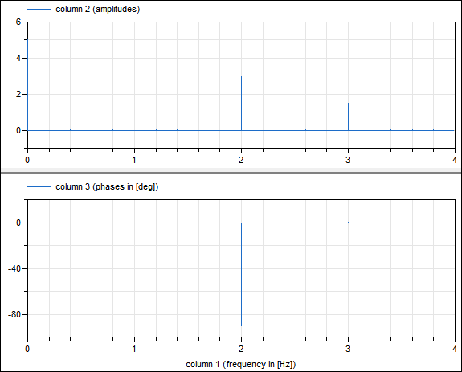

RealFFT1Example demonstrating the use of an FFT calculation during simulation (and storing both amplitudes and phases on file) |
|
Information
This information is part of the Modelica Standard Library maintained by the Modelica Association.
In this example the signal y
y = 5 + 3*sin(2*pi*f1) + 1.5*cos(2*pi*f2)
is sampled and an FFT is computed from the sampled signal (default: f1 = 2 Hz, f2 = 3 Hz). In the public part the FFT is stored up to f_max (internally in the protected part the FFT is stored up to 5*f_max). With the default values for f_max (= 4 Hz) and f_resolution (= 0.2 Hz), the following results are achieved:
fi[0] = 0, Ai[0] = 5; // mean value of signal fi[11] = 2, Ai[11] = 3; // frequency/amplitude of sine fi[16] = 3, Ai[16] = 1.5; // frequency/amplitude of cosine
A plot of the resulting FFT is shown in the next image:

Note, phases of small amplitudes (= smaller as 0.0001*maximalAmplitude) are explicitly set to zero, since the corresponding "phase" is numerical noise (and would just be confusing). Furthermore, note that the FFT phases are with respect to a cos(..) signal.
Parameters (7)
| f_max |
Value: 4 Type: Frequency (Hz) Description: Maximum frequency of interest |
|---|---|
| f_resolution |
Value: 0.2 Type: Frequency (Hz) Description: Frequency resolution |
| f1 |
Value: 2 Type: Frequency (Hz) Description: Frequency of sine |
| f2 |
Value: 3 Type: Frequency (Hz) Description: Frequency of cosine |
| FFT_resultFileName |
Value: "RealFFT1_resultFFT.mat" Type: String Description: File where FFT will be stored as [f,A,Phi], with f in {Hz] and A the amplitudes and Phi the phases in [rad] |
| nfi |
Value: max(1, min(integer(ceil(f_max / f_resolution)) + 1, nf)) Type: Integer Description: Number of frequency points of the interested frequency range (only up to f_max) |
| fi |
Value: Type: Frequency[nfi] (Hz) Description: FFT frequencies of interested frequency points |
Outputs (3)
| Ai |
Type: Real[nfi] Description: FFT amplitudes of interested frequency points |
|---|---|
| Phii |
Type: Real[nfi] Description: FFT phases of interested frequency points |
| info |
Type: Integer Description: Information flag from FFT computation; = 0: FFT successfully computed |